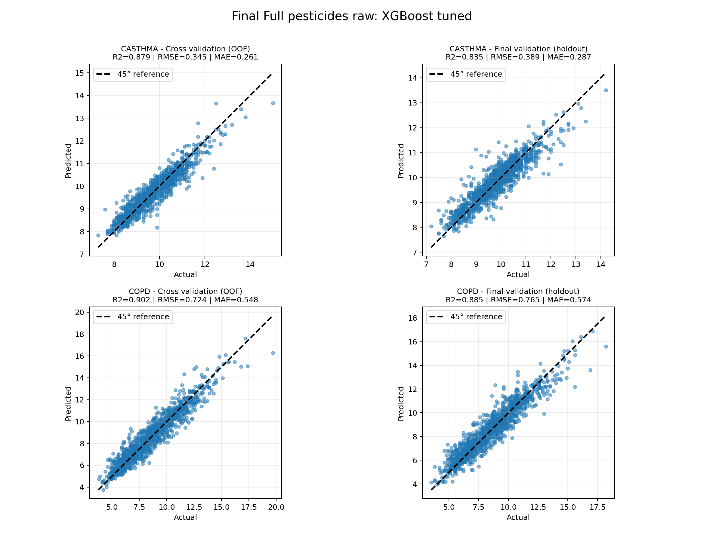

Model specifics
This page summarizes the final county-level models used for the interactive map: gradient-boosted regressors (XGBoost) on the
Full_pesticides_raw feature set (all pesticide_*_kg fields plus baseline covariates). Outcomes are CDC PLACES
CASTHMA and COPD prevalence (%). Full documentation lives in the repository
docs/.
Specifications
| Algorithm | XGBoost regressor (tuned via grouped CV) |
|---|---|
| Feature set | Full_pesticides_raw — 445 pesticide_*_kg columns + 16 baseline covariates (demographics, PLACES confounders, cropland, YEAR) |
| Targets | Asthma (CASTHMA), COPD (COPD) — county prevalence % |
| Split | Spatial / grouped scheme with train, validation (holdout), and test; map uses predictions for all counties with features (2019 layer) |
| Hyperparameters (holdout tuning) | CASTHMA: learning_rate=0.1, max_depth=5, n_estimators=200 · COPD: learning_rate=0.05, max_depth=5, n_estimators=200 |
| Code & notebooks | modeling/model_selection.ipynb, modeling/validate_model_accuracy.py |
Developers: Allison Londeree, CJ Concepcion, Matthew Hamil, Ryan Bausback, Sunyoung Park. Model card (Mitchell et al.) in repo.
Documentation (repository)
- Joint dataset datasheet — Gebru-style documentation for the county×year table, sources, preprocessing, ethics (Markdown on GitHub).
- Model card — Intended use, metrics, limitations, quantitative tables, ethical considerations.
-
Pesticide feature list
— Complete sorted
pesticide_*_kgcolumn names used inFull_pesticides_raw.
Performance metrics
Regression metrics on county-level prevalence. OOF = out-of-fold on the training split; holdout = external validation split (n = 1219 county-years each target).
Cross-validation (OOF)
| Target | RMSE | MAE | R² |
|---|---|---|---|
| CASTHMA | 0.345 | 0.261 | 0.879 |
| COPD | 0.724 | 0.548 | 0.902 |
External holdout validation
| Target | RMSE | MAE | R² | RMSE 95% CI | n |
|---|---|---|---|---|---|
| CASTHMA | 0.389 | 0.287 | 0.835 | [0.366, 0.410] | 1219 |
| COPD | 0.765 | 0.574 | 0.885 | [0.728, 0.803] | 1219 |
Fit: predicted vs. actual
Four panels: CASTHMA and COPD, each with cross-validation (OOF) and final validation (holdout).
Points near the 45° line indicate close agreement between model predictions and CDC PLACES prevalence. Regenerate with
python modeling/plot_final_full_pesticides_xgboost_results.py.

Full_pesticides_raw): predicted vs. actual prevalence (%).Equity view
Exploratory view of prediction error by subgroup (e.g. income, urban–rural, race proxy). This supports discussion in the model card; it is not a causal fairness audit.
Regenerate with python modeling/plot_equity_gap_values_final_full_pesticides_xgboost.py and related notebooks as documented in modeling/.
Disclaimer
Estimates are ecological and associative. They are for planning and research, not individual diagnosis or legal use. See the model card for full limitations and ethical considerations.